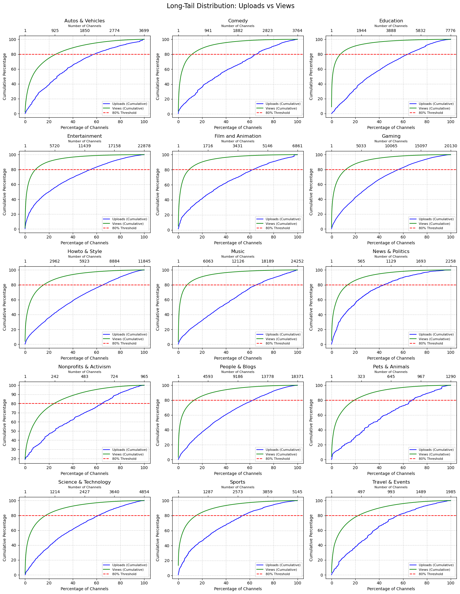
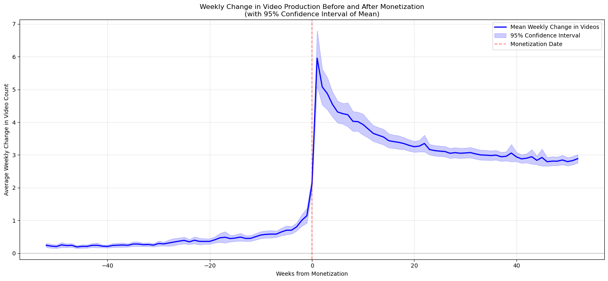
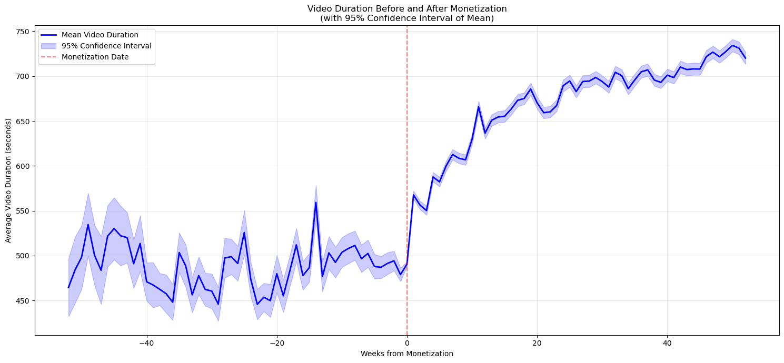
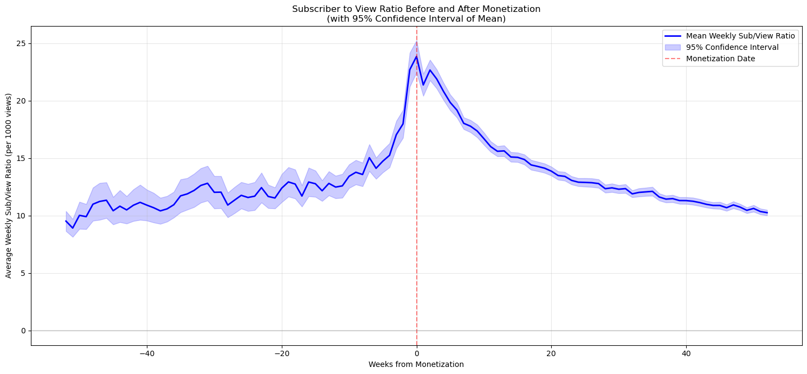
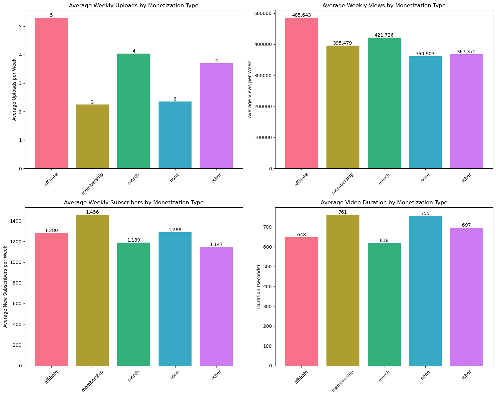

Welcome to PanADA
Since its launch in 2005, YouTube has transformed from a simple video-sharing site into the largest online video platform in the world. What began as a space for casual uploads has evolved into a thriving ecosystem where content creation is not just a hobby, but a viable and lucrative profession gathering hundreds of millions of people around channels and videos.
Today, millions of creators, from individuals to businesses, use YouTube to share knowledge, entertain global audiences, and build careers.
This data story explores the evolution of YouTube's content creation landscape, focusing on key trends that mark the platform's professionalization.
By examining upload patterns, production efforts, and content strategies across categories, we map the platform's transition from a space for amateur expression to a professionalized digital career hub. This exploration not only highlights how content creators have adapted to an evolving ecosystem but also sheds light on the dynamics that drive success in today’s digital media landscape.
The Evolution of Content Creation on YouTube
From cat videos to blockbuster productions, YouTube has come a long way since its humble beginnings. Regular and consistent uploads are now hallmarks of professional content creation, reflecting strategic efforts to maintain audience engagement and drive growth. To explore how content creation has evolved over time, we examine upload frequency and consistency across different YouTube channel categories, highlighting trends that shaped the platform’s professionalization.
In the early days of YouTube, uploads were as unpredictable as a viral meme, with creators treating the platform as a casual playground for creativity. Fast forward to today, and the upload game has leveled up significantly. Categories like Gaming and Entertainment now dominate content production, churning out videos at a pace that could rival popcorn popping at a blockbuster premiere.
This graph paints a vivid picture of YouTube's content explosion, showing the total number of uploads per year across various channel categories from 2008 to 2018. Gaming, Entertainment, and Music have taken center stage, with upload counts skyrocketing like fireworks on New Year's Eve, reflecting their starring role in YouTube's meteoric rise. Meanwhile, categories like Education, Science & Technology, and Nonprofits & Activism have grown at a steadier pace, quietly building their niche audiences without the same spotlight.
The data highlights a clear upward trend in upload frequency, especially after 2010—a time when YouTube started to feel less like a hobbyist's playground and more like a digital empire. Gaming and Entertainment raced ahead, leading the charge with uploads as abundant as power-ups in a video game, reflecting their immense popularity and the professionalization of creators. Meanwhile, Education and Music took a more methodical route, growing steadily as creators discovered the magic of structured, high-quality content in these areas, like striking the perfect chord in a symphony.
This colorful set of bar charts breaks down upload frequency per year for each channel category, giving us a front-row seat to YouTube’s evolution. It’s like watching a time-lapse of the platform's growth, where some categories—like Gaming and Entertainment—skyrocketed in activity, while others, such as Education and Music, found their rhythm more gradually, showcasing distinct patterns of rapid growth and moments of stabilization.
Entertainment and Gaming have been on a roll, growing consistently year-over-year, with upload numbers exploding between 2014 and 2018 like a viral trend that just won’t quit. Education, on the other hand, took the scenic route, showing a steady and deliberate rise as creators embraced more structured, professional practices. Meanwhile, categories like Nonprofits & Activism and News & Politics may not steal the spotlight, but their smaller, focused growth highlights their niche yet impactful presence on the platform.
Imagine walking into a party where just a handful of guests are grabbing all the attention. That’s pretty much what we see in these long-tail distribution plots for YouTube categories! A small number of channels dominate the scene, amassing a whopping 80% of the views in their respective categories. These 'celebrity' channels have skyrocketed in popularity, leaving the rest to humbly share the remaining 20%. But here’s the plot twist: the channels with the most views aren’t necessarily the ones flooding the platform with uploads. The uploads curve tells a different story—it’s more gradual, showing that consistent upload machines aren’t always the ones stealing the spotlight. This contrast highlights the strategic genius of some creators who may upload less but manage to capture enormous attention with each video. In categories like Gaming, Entertainment, and Education, these 'view magnets' shape the narrative of success, proving that quality (and timing!) often trumps quantity. These insights shine a light on how a select few creators have turned YouTube into their personal stage, setting the pace for others to follow
Upload frequency shows us how often creators hit 'publish,' but consistency tells the real story of their commitment, how reliably they stick to a schedule. It’s the difference between a one-hit wonder and a steady stream of content that keeps audiences coming back for more. Professional creators know the secret sauce: regular uploads at predictable intervals are the key to winning the hearts and views of their audiences.
This boxplot reveals the proportion of active months for channels in each category, with an 'active month' defined as one featuring at least 2 uploads. Think of it as a consistency scorecard! Categories like News & Politics and Nonprofits & Activism lead the way, boasting higher median consistency that reflects their carefully planned, strategic content schedules. Meanwhile, other categories show more variability, painting a diverse picture of upload habits.
Now that we’ve uncovered how content creation frequency and consistency have evolved, it’s time to zoom out and explore the bigger picture: which categories have been trailblazers in YouTube’s professionalization, and how have these professional strategies spread across the platform?
Which content categories drive YouTube's professionalization, and how have their practices evolved?
Monetization strategies across channel categories
This question takes a closer look at how professionalization has shaped different types of YouTube videos, showing that it’s not a one-size-fits-all process. Instead, it’s something that has developed differently across various content categories on the platform. Previously, we saw that channels within the same category can behave quite differently, so it makes more sense to study professionalization at the category level rather than focusing on individual channels. This section dives into how professionalization has evolved, analyzing it specifically at the category level. The study is organized into three parts. First, it examines how different YouTube categories adopt and utilize monetization strategies. Next, it tests hypotheses about monetization behaviors to explore how professional practices have evolved over time. Finally, a bubble plot analysis maps the connections between these findings, highlighting key correlations and proposing a central hypothesis.
In this first section, we dive into a representative sample of YouTube channels to uncover how they use the monetization methods available through YouTube, as provided by the YouTube API. This sample, which makes up roughly 25% of the YouNiverse database, closely reflects the category proportions of the full dataset, ensuring a reliable overview. By analyzing this data, we gain a clear picture of how different monetization methods are adopted across channel categories. We start by showcasing the distribution of categories within the dataset, then reveal how each category contributes to the use of these methods.
As we saw earlier, some categories dominate the YouTube landscape. But while previous metrics may have spotlighted categories like News & Politics due to their higher activity levels across more channels, their smaller representation in the dataset means they won’t take center stage in this part of the analysis.
Now, when we group the data by the number of videos and channels per category, the focus shifts from the performance of individual channels to broader trends shaping entire categories. Here, Entertainment, Music, Gaming, and People & Blogs steal the show, ranking as the top content-heavy categories in the dataset.
When it comes to monetization methods—such as affiliation, merchandise, and sponsorship—the same top categories dominate, but some interesting exceptions stand out. For example, the How-To & Style category punches well above its weight, using affiliation and sponsorship far more frequently than other categories despite being only the fifth largest in terms of content. This reveals a heavy reliance on external monetization strategies in this space.
One final note: Movies & Shows are missing from this dataset, and Film & Animation barely make an appearance. Even in the full YouNiverse database, these categories are statistically negligible compared to heavyweights like Entertainment and Music, with a scale difference of up to five orders of magnitude. Safe to say, they’re not making waves here!
Monetization and Professionalization-related behaviors through time
Building on the previous discussion of external monetization strategies, hyperlinks in video descriptions can serve multiple purposes. While some may be required for copyright compliance, many reflect a creator's diversification of activities—using the description space to promote their own ventures or affiliate partnerships that supplement their income. As such, the presence of hyperlinks emerges as a meaningful indicator of professionalization.
Beyond hyperlinks, certain keywords frequently appear in video descriptions. These words, apart from a few exceptions or misunderstandings, are often tied to commercial activities or merchandise. In this section, we will focus on three key terms—"shop," "support," and "ad"—to better understand their role in the professionalization of YouTube creators.
Over the years, YouTubers have turned video descriptions into prime real estate—not just for promoting their content but for driving revenue and professionalizing their channels. The use of terms tied to external income and professionalization has increased significantly, but not all terms have grown equally.
For example, terms like "shop" and "support"—directly linked to revenue generation—have seen steady, linear growth of +8% and +6%, respectively, between 2008 and 2019. These words represent clear monetization strategies: "shop" often points to affiliate links or merchandise, while "support" typically refers to crowdfunding efforts. On the other hand, broader terms like "ad" and internet links have exploded in use, with +18% and +30% growth, respectively. Interestingly, internet links saw a sharp surge between 2010 and 2015, while "ad" followed a smoother, steeper trajectory throughout the years.
This evolution suggests that YouTubers have learned to treat descriptions as more than just a space for the classic "Don’t forget to like and subscribe!" Instead, descriptions have become essential tools for connecting with viewers and inviting financial participation in a channel’s growth. Whether it’s crowdfunding, merchandise sales, or affiliate marketing, creators are maximizing this space to support their passion..
Although it’s impossible to capture every nuance of how descriptions are used, one thing is clear: the humble description box has transformed into a key driver of YouTube’s professionalization, enabling creators to bridge the gap between hobby and career..
Cross-Analysis of Monetization Usage and Professionalization Behaviors Across Channel Categories
The charts reveal a clear and compelling linear trend, prompting the inclusion of a weighted linear regression to refine the analysis. The results demonstrate a strong relationship between creators leveraging merchandise and the appearance of terms such as “ad” or URLs in their descriptions. Similarly, a robust connection emerges between affiliation and mentions of “shop.” While other correlations are also notable, they are somewhat less prominent..
However, it is important to approach these findings with caution. Due to the limited sample size resulting from aggregated category data, the p-values are significant, but causal relationships cannot be inferred with confidence. What does stand out, though, is that creators who use the description space strategically tend to excel in monetization efforts—an observation unlikely to be purely coincidental..
Additionally, as observed in earlier analyses, dominant categories consistently lead the way, occupying the upper-right quadrant of the charts. That said, smaller categories, such as How-To & Style, occasionally emerge as noteworthy competitors, challenging larger categories and underscoring their unique potential..
How has creator content strategy evolved to reflect professional monetization approaches?
This analysis examines how creators adapt their content strategies as they transition toward monetization, leveraging the Youniverse dataset that combines channel metadata with temporal engagement metrics. Our methodological approach consists in analyzing the evolutionary trajectories of content creators, focusing specifically on the relationship between strategic changes and monetization patterns.
We begin by processing longitudinal data from Youniverse, extracting key temporal metrics including views, subscribers, upload patterns, and video durations.
By cross-referencing the time evolution of these metrics with monetization data derived from the description column of the channel metadata, we can pinpoint specific strategic shifts that coincide with monetization milestones.
We conduct detailed temporal analysis of their metrics and content strategies, revealing how creators systematically modify their approach as they transition toward professional content production.
This framework provides insights into how content creators evolve their strategies to support monetization, potentially revealing successful patterns in the progression from hobbyist to professional content creation. The findings will contribute to our understanding of professional development patterns in digital content creation and identify key strategic adaptations that accompany successful monetization approaches.
The Weekly Video Production Journey : Before and After Monetization
We expect to capture how creators transform their production habits around monetization by visualizing the change in weekly videos upload before and after monetization.
We can observe a dramatic transformation in content production habits around monetization. The pre-monetization period shows remarkably stable but low production levels, hovering around 0.5 videos per week. This baseline suggests a casual, hobby-like approach to content creation. The monetization date marks a seismic shift with production skyrocketing to 6 videos per week. This initial surge reflects creators' immediate response to monetization incentives, possibly driven by a combination of enthusiasm and perceived pressure to maximize revenue potential. What follows is equally telling a gradual decline to about 3 videos per week, suggesting creators finding their sustainable rhythm. The narrowing confidence intervals over time indicate increasing professionalization with creators moving from sporadic posting to consistent, predictable production schedules.
The Evolution of Video Duration : A Quality Investment Timeline
This longitudinal analysis tracks how creators invest in content depth over time, centered around their monetization date. This visualization tells the story of how creators gradually shift from shorter, possibly more casual content to longer, more in-depth videos as they professionalize their channels.
Here, we observe a significant shift in creator strategy captured by the evolution of content depth and quality. Pre-monetization video durations fluctuate around 500 seconds with wide confidence intervals, indicating inconsistent approaches to content length. The post-monetization period shows a sustained upward trend in video duration, eventually exceeding 700 seconds. Unlike the spike-and-decline pattern seen in production frequency, this increase is gradual and sustained, suggesting a fundamental shift in content philosophy rather than a reactive change. The narrowing confidence intervals post-monetization tell a story of increasing professionalization, creators developing consistent standards for their content length and quality. The steady climb rather than sudden jump implies this was a learning process, with creators gradually discovering that longer, more detailed content better serves their monetized channels. This trend aligns with platform algorithms that tend to favour longer watch times and suggests creators becoming more strategic about engagement metrics.
Subscriber to View Ratio before and after Monetization:
We normalized the relationship between subscribers and views, to show subscribers gained per 1,000 views. The data spans 40 weeks before and after monetization, with the monetization date marked by a red dashed line at week 0. This visualization helps us understand how a channel's ability to convert viewers into subscribers changes throughout their monetization journey.
Before monetization, channels maintained a relatively stable ratio of around 10-12 subscribers per 1,000 views, with some minor fluctuations. However, the most striking feature is the dramatic spike that occurs around the monetization date, where the ratio surges to approximately 23 subscribers per 1,000 views - nearly double the pre-monetization average. This peak is followed by a gradual but consistent decline over the subsequent 40 weeks, eventually returning to roughly the pre-monetization levels of about 10 subscribers per 1,000 views. This pattern suggests that monetization creates a temporary boost in subscriber conversion, possibly due to increased creator investment in content quality or changes in audience engagement behaviour, but this effect diminishes over time as the channel matures while maintaining consistency.
The Monetization Strategy Breakdown : A Cross-Section of Creator Approaches
We provide a comprehensive snapshot of how different monetization strategies shape creator behaviour. By comparing affiliate marketing, membership programs, merchandise sales, non-monetized channels, and other revenue models across four key metrics (uploads, views, subscribers, and video duration), we can see how creators optimize their content strategy based on their primary revenue source. Think of this as a creator's strategic playbook - each monetization type creates its own distinct pattern of behaviour and success metrics.
Our analysis reveals distinct patterns in how channels evolve with different monetization strategies.
Affiliate-monetized channels stand out as the most prolific content producers, averaging 5 uploads per week, more than double the rate of membership-focused channels (2 uploads) and significantly higher than non-monetized channels (2 uploads). This suggests that affiliate partnerships may incentivize more frequent content creation, possibly due to the need to regularly showcase products or services.
When it comes to viewership, affiliate channels also lead the pack, garnering an average of 485,643 weekly views, followed by merchandise-focused channels with 421,726 views. This indicates that affiliate content tends to attract larger audiences, perhaps due to the combination of regular uploads and product-focused content that often aligns with viewer interests and search patterns.
However, the subscriber story tells a different tale. Membership-based channels, despite posting less frequently, achieve the highest weekly subscriber growth at 1,456 new subscribers per week. This suggests that while they produce less content, their videos may be of higher quality or provide more value to viewers, encouraging long-term channel commitment.
The duration analysis provides another interesting insight. Membership-based followed by non-monetized channels actually produce longer videos (averaging respectively 761 and 755 seconds) compared to affiliate channels (648 seconds). This could indicate that monetization strategies might influence content length.
Looking at the distributions across channels, we see significant variability within each monetization type, suggesting that success isn't solely tied to monetization strategy. However, the patterns suggest that different monetization approaches might lead to different content strategies:
1. Affiliate channels focus on frequent, shorter content with broad reach
2. Membership channels prioritize subscriber growth through less frequent but potentially more engaging content
3. Merchandise-focused channels maintain a balanced approach between views and engagement and tend toward longer-form content, perhaps focusing more on creative expression.
These findings suggest that successful YouTubers adapt their content strategy to align with their chosen monetization approach, rather than following a one-size-fits-all model. The data also hints at a possible evolution in content strategy as channels mature and diversify their revenue streams, with each monetization type potentially serving different stages of a channel's growth journey.
Community management’s evolution from casual interactions to professional strategies
One of the most important aspects of YouTube is the community aspect. In the same way that a company wants to retain its customers, a content creator wants to do the same and this is achieved through the community, among other things. A YouTube channel must be able to generate engagement and reaction from its followers and here we offer content creators some ideas to help them do this.
The goal is to help the content creators in the management of their community by identifying strategies to stimulate the engagement of the viewers within the community. To do this, we firstly understand which themes are susceptible to generate the most reactions among the viewers of the community. This will help the content creator to optimize its future content to maintain an active and engaged audience. We thus analyse interactions within the whole youtube community by studying the comments. The goal is to identify how themes are correlated to each other. Knowing these correlations or "distances" between the themes, we can create clusters of themes, which means groups of themes that often appear together in an author's comments.
Once themes are grouped together into clusters, it will be easier for the content creator to identify which subjects are keen to encourage reactions among its community. Thus the content creator will explore new subjects or deepen some subjects and will also try to collaborate with other content creators that are implied in themes located in the same theme cluster.
There are mainly 17 categories of videos in the dataset, but two of them are under-represented. Only 5 videos are in the category “Movies” and 41 in the category “Shows” compared with the others that have from 600 thousands to 10 millions of videos. This is why we based our analysis on only 15 categories and ignored “Movies” and “Shows”.
The first goal was to compute a kind of distance between the themes. We identified how correlated were the behaviors of comment authors. For example, if we notice that people who often react under videos from theme A will also partially react under videos from theme B but will never react under videos from theme C, we will thus conclude that themes A and B are close to each other and thus their distance is close to 0 and A and B are far from C and thus their distances to C is close to 1.
Firstly, we notice that this is not that surprising. It is logical that people who comment content about Nonprofits & Activism will be more likely to comment under content about Education, News & Politics ... and the analysis is the same for the other categories.
We also notice that some themes seem to be close to a lot of different themes (for example Entertainment or People & Blog) and others seem to be quite isolated (for example Autos & Vehicles and Nonprofits & Activism). Moreover, Entertainment is in the top 3 of 9 categories while Nonprofits & Activism is in the top 3 of None. The following animation shows us how isolated or how strongly linked is a category compared with the others.
Without surprises, we notice on the animation that Entertainment, People & Blogs and Comedy are the three categories that seem to be the less isolated.. This can be firstly explained by the fact that they are liked by a range variety of people. Indeed, everybody wants to be entertained in some ways and want to laugh in front of comedies whatever are the other contents the perso is consuming. Secondly, this can be explained by the fact that Entertainment, People & Blogs and Comedy are categories that can englobe a lot of different kinds of content. We can entertain people or make them laugh in a lot of different ways that's why different kind of people will still consume this content and react about it in comments. We also notice that the most isolated categories are Autos & Vehicles, Nonprofits & Activism and Travel & events. This can be explained by the fact that these categories are quite specific and don’t concern everybody.
We finish the analysis by simplifying the task to the content creator. We now try to identify clusters of categories based of the distance matrix. For that, we use hierarchical clustering as following.
They seem to be quite logical with reality. For a content creator, these clusters can be easily usable for his strategies. A content creator working on Autos & Vehicles can make more contents about the science behind them, it will probably make his community react more and grow around new subjects it is interested in.
And to conclude...
YouTube creators have gone pro, swapping casual uploads for a full-on content hustle. Once monetization kicks in, the game changes: random posts become scheduled drops, videos get longer and shinier, and audience engagement strategies level up.
The data’s clear: monetization milestones trigger a burst of productivity, followed by creators finding their groove. Affiliate-driven channels pump out quick, frequent vids for maximum reach, while membership-focused creators go for fewer, meatier uploads to keep subscribers hooked.
Audience metrics? A spike in subscribers right after monetization cools into steady growth, proving creators need more than a viral hit—they need a plan. Engagement trends show overlapping clusters of entertainment, lifestyle, and comedy thriving, while niche content stays strong in its lane.
Bottom line: YouTube isn’t just fun and games anymore—it’s a well-oiled machine where creators balance creativity, strategy, and audience connection to crush it.